Setting Up Federations Using ScienceMesh
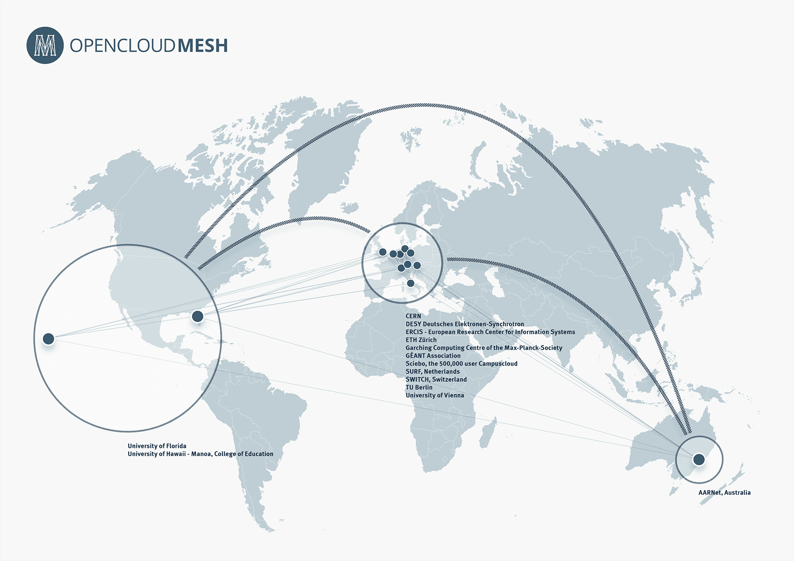
Introduction
This document will guide you through setting up a federation between users of Infinite Scale instances using the ScienceMesh framework, which includes the Open Cloud Mesh (OCM) technology.
-
ScienceMesh is the Federated Science Cloud Mesh that connects existing and heterogeneous sites in a transparent way. It provides a managed white list of trusted federated sites.
-
The Open Cloud Mesh Protocol (OCM) provides the disovery and use of the RESTful API endpoints, request and response headers, possible response codes, request and response formats, hypermedia controls, error handling etc. Using this protocol, consumers do not need to accept a share, the shared resource will be available to them immediately.
Both API’s have their roots in CERN where providing resources to trusted partners in an easy way is a key for their daily scientific work.
To setup a federation using ScienceMesh, only a view steps are necessary:
-
Setup a trust between instances involved.
This is only required one time between instances. -
Setup the federation between users using generated tokens.
This is only required one time between users who want to federate. -
Share resources between users of the federation.
One Time Setup
The following description only needs to be done once per instance involved to establish a trust relationship, and requires sysadmins with access to the Infinite Scale configuration files. If a trust relationship has not been established, you must ask your sysadmin to establish one.
| For security, privacy, and data protection reasons, federation invitations are restricted to trusted instances. |
Once a trust relationship is established, the user can create a federation with another user from the trusted instance to share resources. Each federation only needs to be established once.
Setup a Trust Relationship
| For security reasons, only the instance admins (sysadmins) can establish a trust relationship. |
In the example below, a trust relationship is established between the ocis.owncloud.test and host.docker.internal instances.
- The following requires sysadmin privileges on both parties sharing a trust
-
To prepare the Infinite Scale instances involved for federation, a trust relationship must be established. This is done by creating an
ocmproviders.jsonfile according to the description in Trust Between Instances.Once the file is properly set up,
OpenCloudMeshmust be enabled via an environment variable. See Enable OCM for more details.Finally, depending on the deployment, either all trusted instances or each OCM service must be restarted for the changes to take effect.
Setup a Federation Between Users
| After trust is established between instances, users can now establish a federation with users from another instance, the federation partner. |
Before sharing resources, a sharer must first invite a partner to join a federation. This only needs to be done once per inviter/acceptor pair. This pair is now called a federation. After the federation is set up, resources can be shared with each other.
The following can be done by any user of the trusted instances. If demo users are set up that should not exist in production, one federation partner must be a manually created, non-demo user.
- Generate an invite token for a user on another instance
-
In our example, user
vladfrom instanceocis.owncloud.testgenerates the invite token.-
Select the ScienceMesh application, the app selector can be opened by clicking the square icon in the upper left corner:
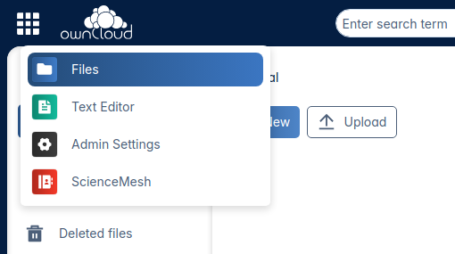
-
The Invitations screen opens:
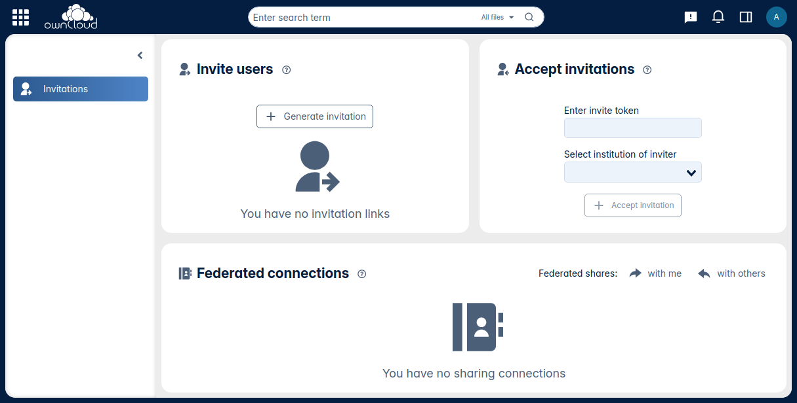
-
In Invite Users click Generate new invitation, the following window will appear. Optionally, enter a description and an email address of the partner user for the federation you want to create and click Generate. If an email address is entered, a preformed URL containing the token will be sent to the invited user for easy acceptance. Note that you cannot edit a generated token. You must either recreate it or send it manually.
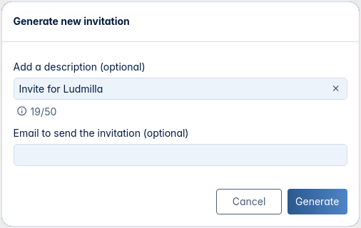
-
Back in Invite users, the generated token is displayed. The remaining time to accept the invitation before it expires is also displayed.
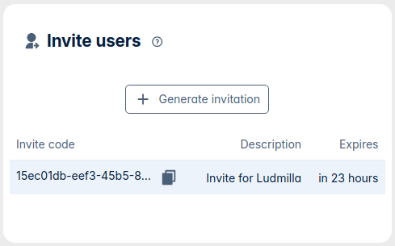
-
- Accept the invitation token from the federation partner
-
In our example, user
ludmillafrom thehost.docker.internalinstance is the federation partner and will accept the invite token.When the federation partner has received an email to accept the invitation, click on the link provided in the email to open the Invitations screen with the pre-populated data in the Accept invitations window.
-
Select the ScienceMesh application, the selector can be opened by clicking the square icon in the upper left corner:
-
The Invitations screen opens:
-
In the Accept invitations field, if not pre-populated by the email link, enter the token and select the institution of the user who sent the invitation from the drop-down box. Token and institution must match to be accepted. When finished, click Accept invitation:
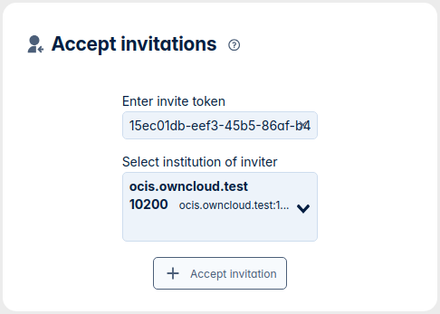
-
In the Federated connections window, the established federation is now displayed and ready to share resources between the federation partners. This information is also displayed on the inviter side of the federation:
Invitor:
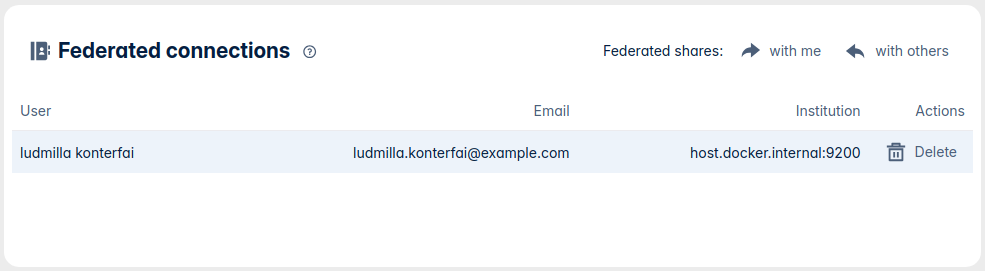
Acceptor:
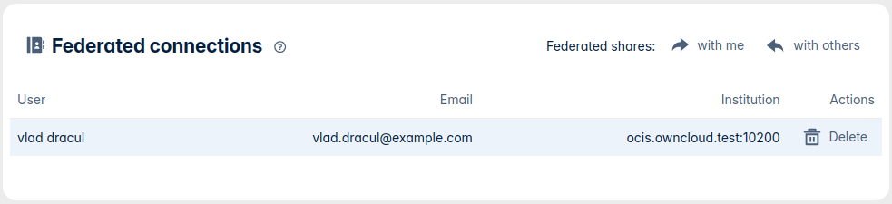
-
Share Resources
| An invited user must have accepted the invitation to be selected in the sharing dialog. |
Once the federation is complete, federated users can share resources.
-
In the , switch to
externaland start typing the user name. When found, select it: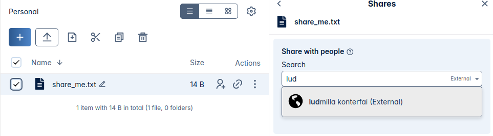
As rule of thumb:
-
You cannot share your personal space.
-
You cannot share a project space.
-
You should not share files from your personal space for security reasons.
-
Only share files and folders inside project spaces.
-
You can edit shared files with Web Office, but you can’t work on the same file at the same time (collaborative editing) because of locking.
Collaborative editing would work if both instances were using the same Web Office backend.
-
-
If you have more federations, you can add more users. Use the three vertical dots to select additional options. When you are done, click Share:
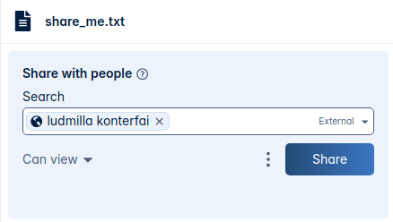
-
In , you can see all the shares that are:
Shared with meorShared with others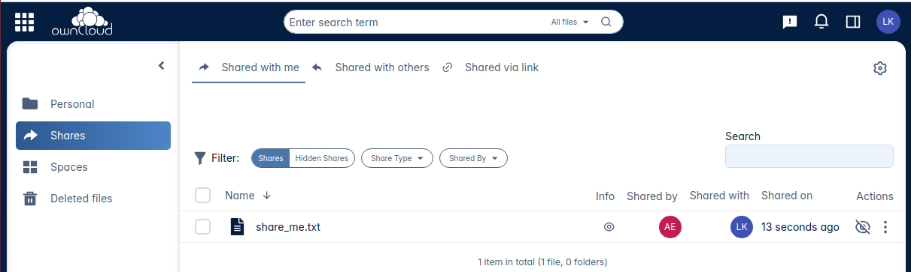